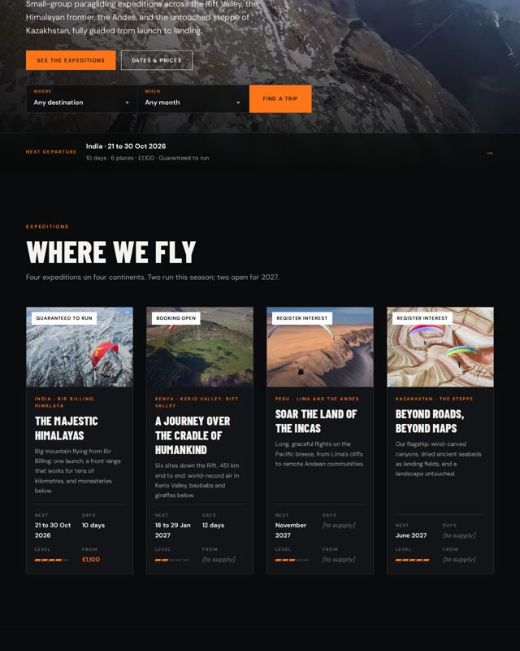
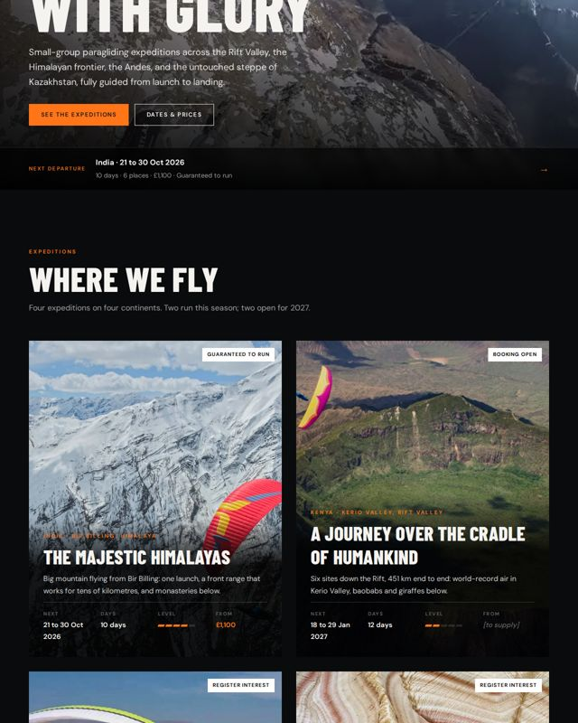
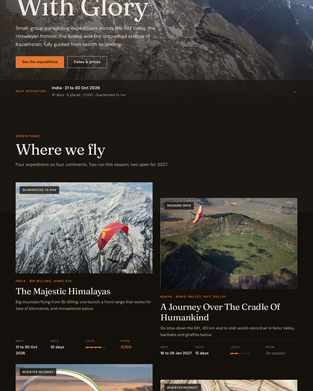
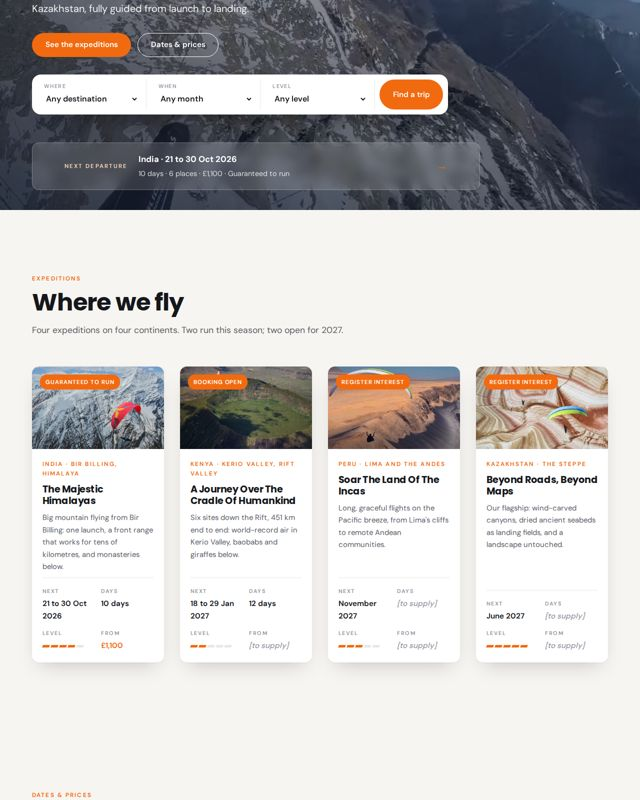

Direction D · the chosen direction: A's look, C's tools
Summit + Clear Skies
Summit's dark, cinematic look with Clear Skies' booking tools: a trip finder that filters every departure, fact-rich trip cards, a clean dates table.
D is A's look with C's booking tools: the dark cinematic Summit style throughout, plus a trip finder in the hero that filters the departures, fact-rich trip cards and a clean dates table. The whole site is being built in it. The three original directions stay below for comparison. Grey [to supply] marks are facts only you can give.

Summit's dark, cinematic look with Clear Skies' booking tools: a trip finder that filters every departure, fact-rich trip cards, a clean dates table.

Stark and cinematic. Near black, huge condensed capitals, full-bleed footage, hard lines. Credentials up front: it sells expertise and challenge.

Documentary and warm. A serif voice, film grain, captions like log entries. The podcast and the trips are one story told from the field.

Light and clear. White and sky, a trip finder in the hero, every card with dates, days, level and price. It sells certainty: pick a date, book.
Kept whatever the direction: the knowledge base door, the globe, the Kenya and India photo sequences, route maps and galleries, the episode pages' Horizon look and transcript sync, the library's stone tiles, the time-of-day sky and the motion work.